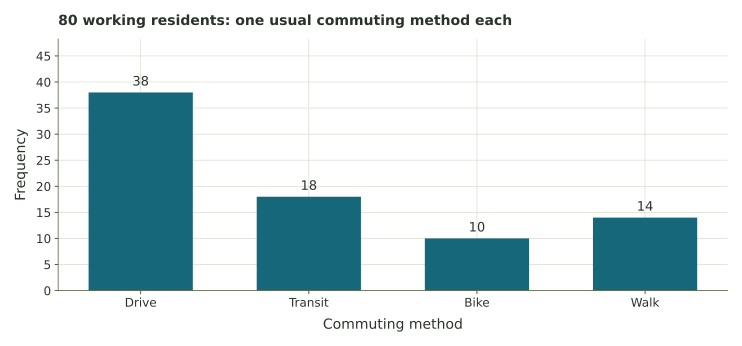

A community transportation survey
Calculate commuting shares, then ask how the selection method affects a claim about the county.
The transportation survey
A county transportation office wants to estimate how working residents usually travel to work. The office surveys 80 working residents from randomly selected addresses in several neighborhoods. Each person reports one usual commuting method.
| Usual method | Recorded count |
|---|---|
| Drive | 38 |
| Public transit | 18 |
| Bike | 10 |
| Walk | 14 |
| Total | 80 |

First describe these Survey results. Then consider using their shares to estimate the pattern among all working residents in the county. The second step depends on the way the sample was collected.
1. Identify the two groups
The population is the whole group the office wants to understand. The sample is the group actually surveyed.
2. Convert the counts into shares
Example
If 6 of 24 workers use one travel method, its relative frequency is 6/24 = 0.25 = 25%. For this survey, divide each count by 80.
Counts: drive 38, transit 18, bike 10, walk 14; total 80. Enter fractions or decimal proportions, then check that your four shares add to 1.
3. Use the empirical distribution
An empirical distribution uses the observed proportions. They give the exact probabilities for randomly selecting one of these 80 responses. For the whole county, they serve as estimates.
Of the 80 respondents, 38 drive and 42 use another method. “Does not drive” is the complement of “drives.”
4. Change where the survey happens
Suppose the office instead surveys 80 people while they wait at the downtown bus station. Consider how this location would affect the responses.
Using the results for planning
Selecting addresses across neighborhoods covers more locations than surveying at one bus station. The address sample can still miss some workers, and not everyone contacted will respond.
For planning, the office might also collect information about travel time, transit routes, accessibility, and cost.